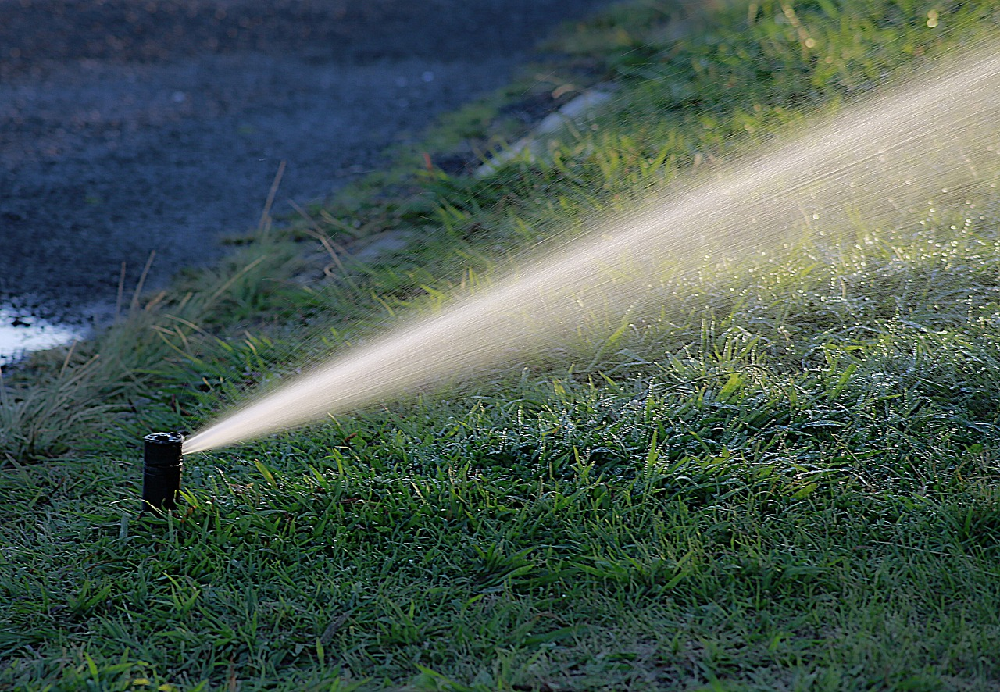

Comment augmenter le rendement des cultures de maïs
Le maïs est l'une des cultures les plus importantes au monde. Découvrez des techniques efficaces pour augmenter le rendement de votre culture de maïs et maximiser vos bénéfices.
Lire l'article

Les bienfaits de l'agriculture biologique
Découvrez comment l'agriculture biologique peut contribuer à la préservation de l'environnement, à la santé des consommateurs et à la durabilité à long terme de l'agriculture.
Lire l'article
Techniques innovantes pour lutter contre les ravageurs des cultures
Les ravageurs peuvent causer d'importants dommages aux cultures. Explorez des méthodes innovantes et respectueuses de l'environnement pour protéger vos cultures des ravageurs et améliorer votre rendement.
Lire l'article

Conseils pour une irrigation efficace des cultures
Une irrigation efficace est essentielle pour garantir la croissance et le rendement des cultures. Apprenez comment planifier et mettre en œuvre un système d'irrigation efficace pour vos champs.
Lire l'article

Les avantages des cultures de couverture
Les cultures de couverture peuvent améliorer la santé du sol, réduire l'érosion et augmenter la biodiversité. Découvrez comment intégrer les cultures de couverture dans votre rotation culturale pour des bénéfices durables.
Lire l'article

Guide pour choisir les meilleures variétés de semences
Le choix des variétés de semences est crucial pour le succès de votre culture. Explorez les facteurs à considérer lors du choix des semences et découvrez les meilleures variétés adaptées à votre région et à vos besoins.
Lire l'article